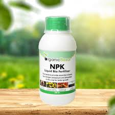
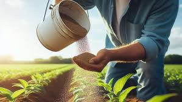
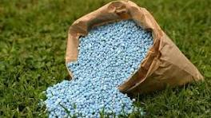
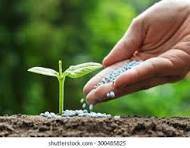

fertilizers for farmers
Fertilizers are substances that provide essential nutrients to plants, enhancing their growth and increasing crop yields. They come in two main types: organic (such as compost and manure) and inorganic (chemical fertilizers like urea, phosphate, and potassium compounds). Proper use of fertilizers helps improve soil fertility by replenishing lost nutrients, but overuse can lead to soil degradation and environmental issues like water pollution. Farmers should apply fertilizers based on soil tests to ensure balanced nutrition for crops while maintaining sustainability.
ORGANIC FERTILIZERS
| sl.no |
fertilizers |
| 1 |
Bone meal |
| 2 |
compost |
| 3 |
fish meal |
| 4 |
chicken manure |
CHEMICAL FERTILIZERS
| sl.no |
fertilizers |
| 1 |
Nitrogen fertilizers |
| 2 |
Phosphate fertilizers |
| 3 |
Potassium fertilizers |
| 4 |
urea |
ON TRENDING
- Bone meal
- Potassium fertilizers



